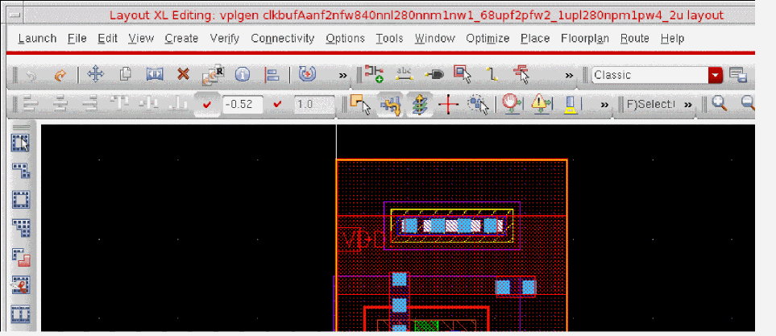

Creating a VPLGen Core Layout
After you have set up the parameter and property values you require in the schematic cell and have marked the cell as a VPLGen in the Configure Physical Hierarchy window, you can create a VPLGen core layout for that cell.
-
Use Connectivity – Generate – Selected From Source to generate an instance of the VPLGen Pcell in your layout view.
Layout XL generates a device with the default parameters defined for the VPLGen in the schematic view. If the parameters specified in the Attributes pane are different from the default parameters in the schematic, Layout XL creates two variants the first time the cell is generated in the layout, one with the default parameters and a second one with the specified set of parameters. -
Use Edit – Hierarchy – Descend Edit or Edit – Hierarchy – Edit In Place to descend into the VPLGen Pcell instance.
The cell name for the VPLGen is derived automatically by concatenating the name of the cell and the names and values of the specified parameters.
You can use thedbRegVPLGenCreateCellNameSKILL function to register your own SKILL function to create unique cell names. -
Use Layout XL to lay out the cell to meet your requirements.
You can move instances, pins, and vias and add layers, wells, high and low voltage layers, substrate ties, interactive routing, and any guard rings required. You can also add pins and terminals but only if they match the schematic.
You can also use the Property Editor assistant to change any non-VPLGen inherited parameters as required. Take care not to change any of the inherited parameters, otherwise you will cause a mismatch between the layout instance and its schematic counterpart. If any of the inherited parameters need to be changed, change the parameter on the schematic instance and run the Update Layout Parameters command to generate a new core layout for the VPLGen. -
When you have finished editing the cell, choose File – Save and then Edit – Hierarchy – Return to return to the top level.
By default, the VPLGen core layout is saved to your design library. If required, you can create a dedicated library to store all your VPLGen variants separately from your design cells. You do this in the Cells tab in the Configure Physical Hierarchy window by editing the physical library field to point to the library you want.
Related Topics
Specifying Logical to Physical Mappings for the Components in CPH
Return to top